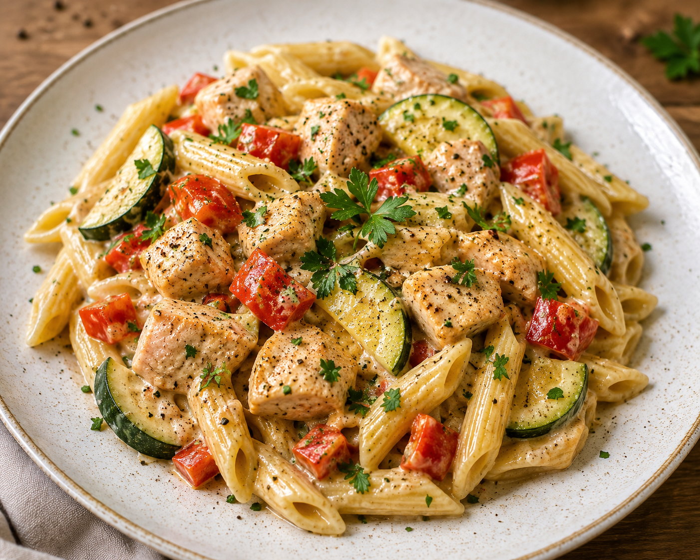

Leichte Nudelpfanne mit Hähnchen
Beschreibung
Diese leichte Nudelpfanne kombiniert zartes Hähnchenfleisch mit frischem Gemüse und einer würzigen Soße zu einem schnellen und ausgewogegen Gericht. Die Kombination aus proteinreichem Fleisch, frischen Zutaten und aromatischen Gewürzen sorgt für eine sättigende Mahlzeit, die sich perfekt für den Alltag eignet und ohne großen Aufwand zubereitet werden kann.
Zutaten
Angabe für 2 Personen
- 250 g Hähnchenfilet
- 1 rote Paprika
- 2 mittelgroße Zwiebeln
- 1 mittelgroße Zucchini
- 200 g Nudeln nach Wahl
- 50 ml Cremefine (7%)
- etwas Olivenöl
- 1 Knoblauchzehe
- etwas Salz
- etwas Pfeffer
- etwas Petersilie
Zubereitung
- Die Nudeln in einen Top mit Salzwasser geben und nach Packungsanweisung kochen.
- Das Olivenöl in einer Pfanne erhitzen.
- Das Hähnchenfilet klein schneiden und in der Pfanne anbraten.
- Knoblauch, Zucchini, Zwiebeln und Paprika kleinschneiden.
- Das Gemüse in die Pfanne geben und kurz mit anbraten.
- Cremefine und Gewürze hinzugeben und das Ganze bei mittlerer Hitze für 5 Minuten köcheln lassen.
- Die fertig gekochten Nudeln abgießen und in die Pfanne geben.
- Alles nochmal kurz warm werden lassen und fertig.
- Das Ganze schön auf einem Teller platzieren, mit frischer und fein gehackter Petersilie garnieren und genießen.
Weitere Anmerkungen
- Für eine kalorienärmere Variante lässt sich dieses Rezept auch wunderbar mit Vollkornpasta kombinieren.
- Frische Petersilie sorgt für zusätzliche Frische und ein intensiveres Aroma.